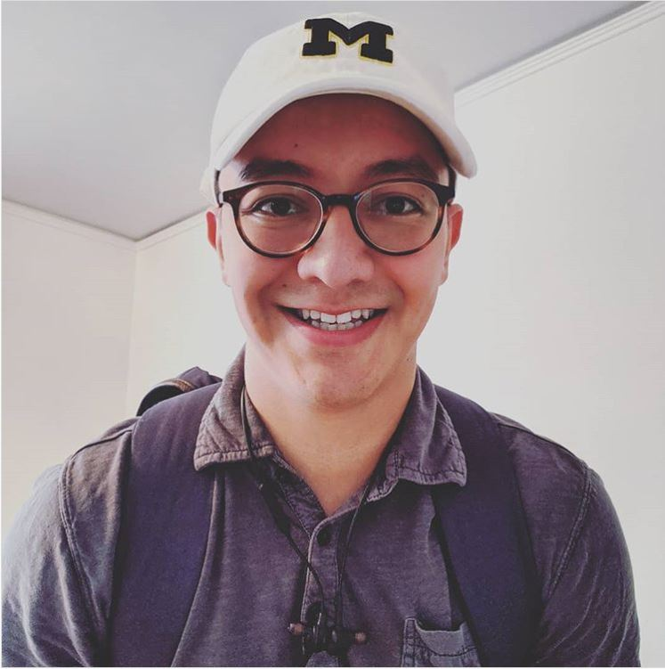
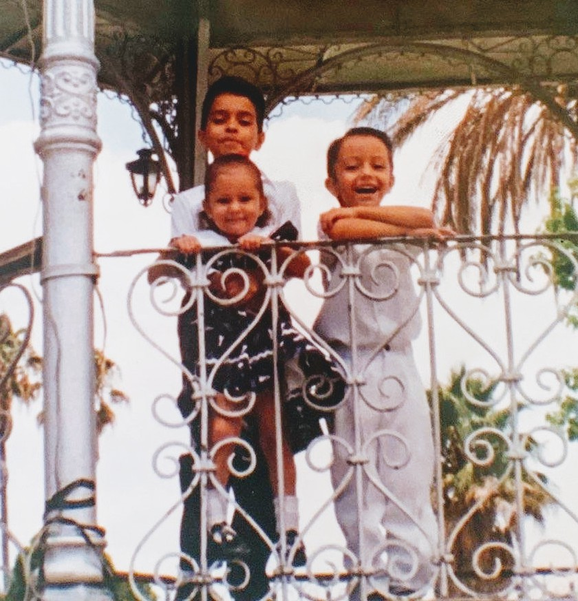
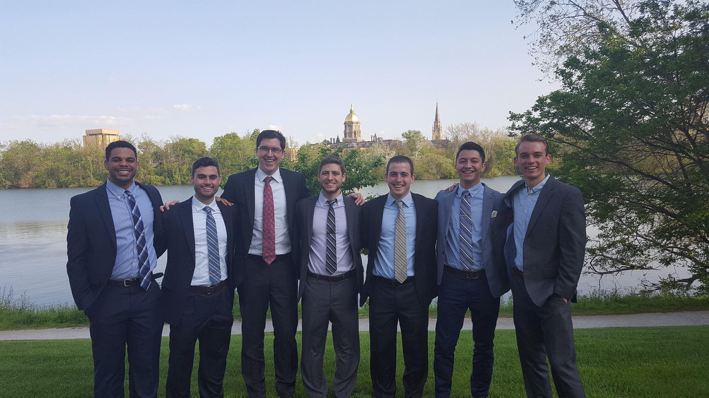
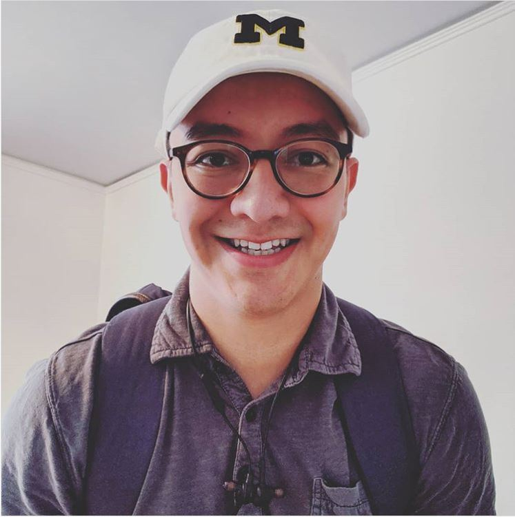
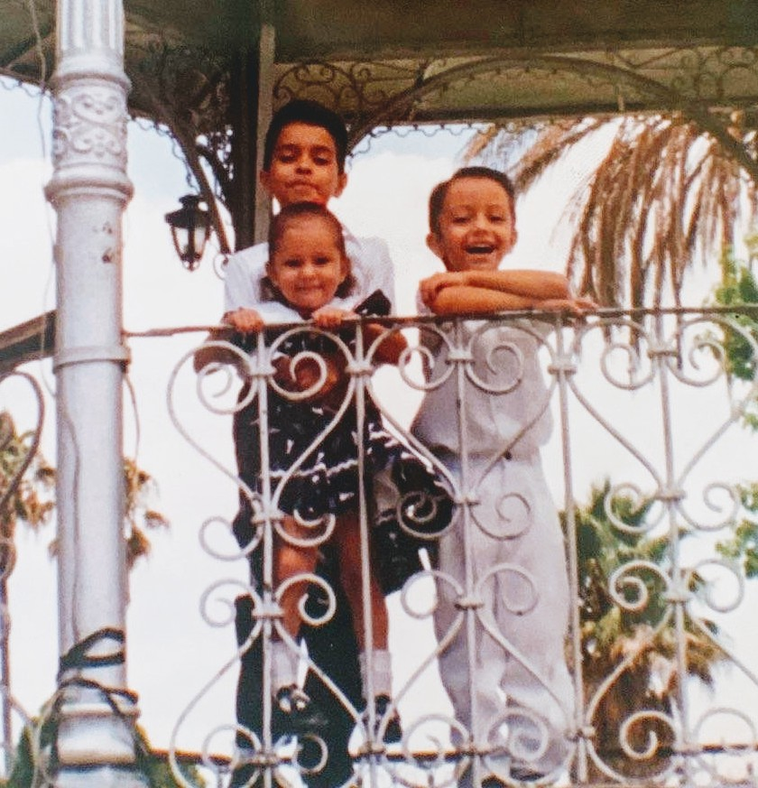
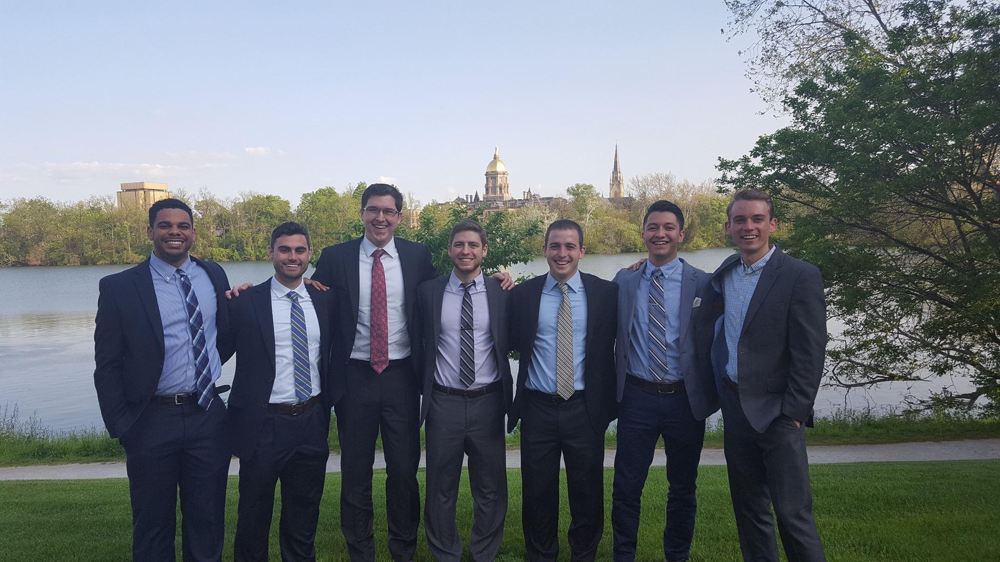
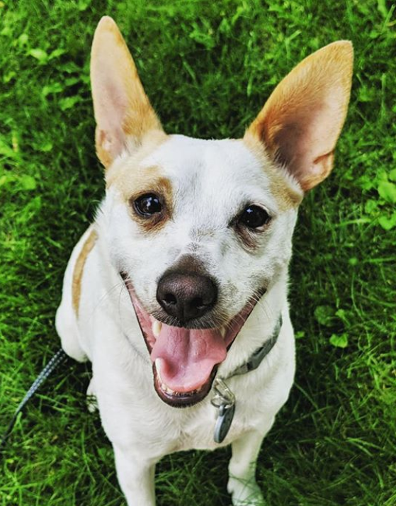

Nice to meet you!
I am Alexis López Medina and I am a dual degree graduate candidate at the Ross School of Business and the School of Information at the University of Michigan - Ann Arbor. Before this I worked professionally at Target Corporation where I most recently was on their Business Partnerships and Negotations team.

I have two siblings - an older brother and a younger sister - and we all were born in Mexico. In 1998 we moved to the United States and our family eventually settled down in Colorado. Though I would consider Colorado home, Mexico will always have a special place in my heart as that is where my roots are.

In 2015 I graduated from the Universtiy of Notre Dame with a Bachelors in Business Administration and a minor in Latino Studies. Though I didn't realize it then, I now see that Notre Dame it became my home away from home. Being an ND Alumnus has opened up many doors (including my professional degree pursuits at the University of Michigan).

A year and a half ago I rescued Keenan (a Jack Russell Terrier mix). Though it's customary to say that I helped a rescue dog, in all reality, Keenan has helped me equally as much if not more!



